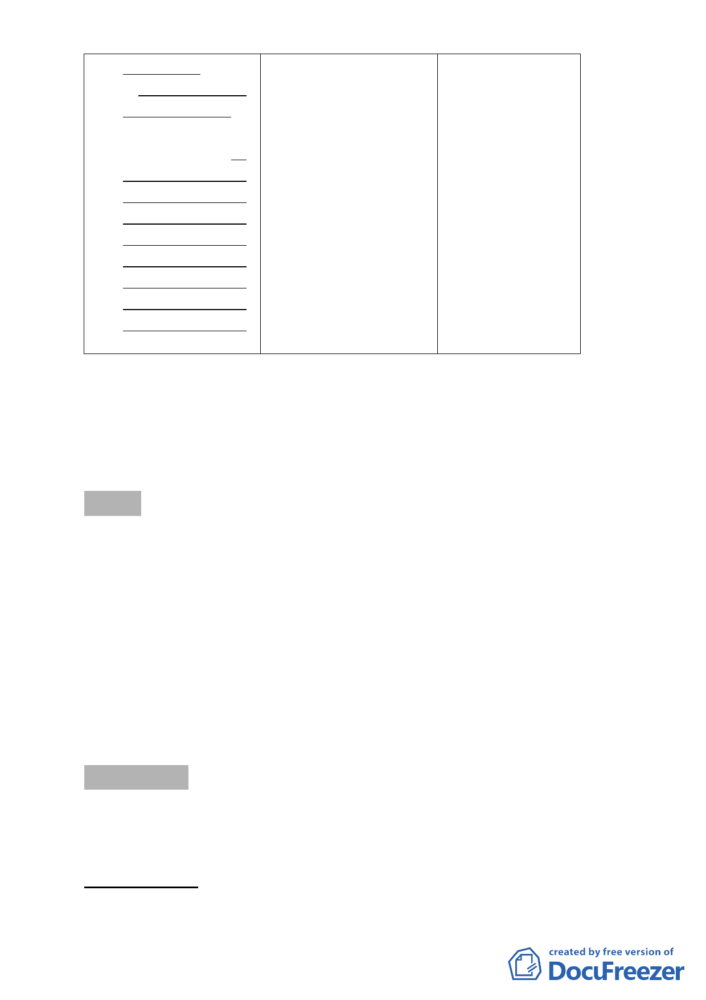

大地工程處編訂
展局編訂「臺北市環 山坡地業務單位於
「臺北市山坡地環
境地質資料庫」中土 99年1月28日成立
境地質資訊系統」
地利用潛力低及很 大地工程處。嗣於
中土地利用潛力低
低之地區，不得申請 101年1月18日，為
及很低之地區，以
開發。但本計畫公告 強化本市防災業
不得申請開發為原
實施前業已申請開 務，改隸工務局。
則。但其建築面積
發建築，且其建築面 另「土地利用潛力
未達165 平方公尺
積未達165 平方公 低及很低之地區不
者，經專業技師評
尺，並經土木、大地 得申請開發」係屬
估簽證並經臺北市
工程或應用地質等 原則性規定，故比
都市設計及土地使
相關專業技師詳細 照主要計畫修訂內
用開發許可審議委
勘測地形、地質，判 容予以彈性調整。
員會審議通過後，
斷無安全顧慮者，不
不在此限。
在此限。
五、 全 案 係 市 府 101 年 3 月 8 日 府 都 規 字 第 10110616200 號 及 第
10130094600號公告公開展覽並函送到會。
六、 公民或團體所提意見：無。
七、 辦理單位：臺北市政府。
八、 法令依據：都市計畫法第27條第1項第3款。
決議：
本案附帶下列決議後修正通過。
（一）本案範圍內個案未來申請開發許可時，都市設計審議除應
嚴格檢視建築建蔽、容積、使用管理外，並將平台設計納
入審查範圍，非屬審查核可之私設平台則以違章建築處理。
（二）本案開發許可範圍係屬山坡地，其使用及經營管理影響公
共安全甚鉅，請臺北市政府在後續審查時對於其後續經營
管理安全規範的訂定應予慎重。
審議事項 二
案名：變更臺北市大安區龍泉段一小段123 地號等6筆土地第三種
住宅區為第三種住宅區（特）細部計畫案
案情概要說明：
一、 計畫範圍：
-5-